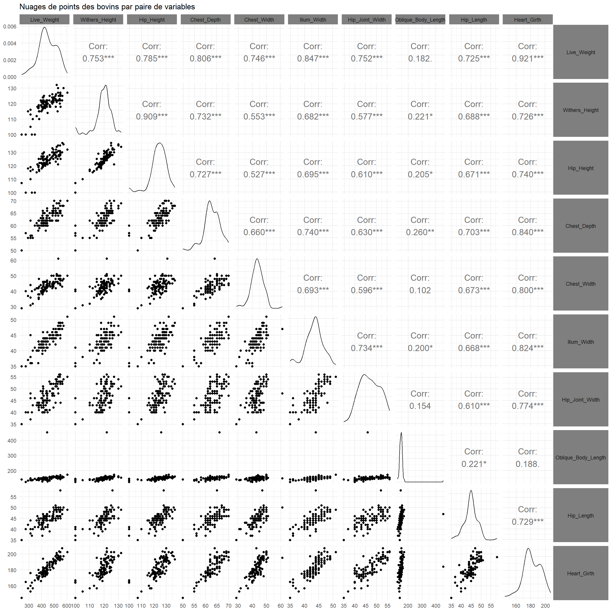

On considère à nouveau le jeu de données cows.Rdata de la partie 1, disponible ici .
On cherche dorénavant à expliquer le poids vif d’un animal Live_Weight en fonction de toutes les autres variables à disposition.
Importer les donnéees et retirer la \(1^{\text{ère}}\) colonne à l’aide de la fonction select() du package dplyr(disponible avec tidyverse).
Voir la réponse
library(tidyverse)
── Attaching core tidyverse packages ──────────────────────── tidyverse 2.0.0 ──
✔ dplyr 1.2.1 ✔ readr 2.2.0
✔ forcats 1.0.1 ✔ stringr 1.6.0
✔ ggplot2 4.0.3 ✔ tibble 3.3.1
✔ lubridate 1.9.5 ✔ tidyr 1.3.2
✔ purrr 1.2.2
── Conflicts ────────────────────────────────────────── tidyverse_conflicts() ──
✖ dplyr::filter() masks stats::filter()
✖ dplyr::lag() masks stats::lag()
ℹ Use the conflicted package (<http://conflicted.r-lib.org/>) to force all conflicts to become errors
load("cows.Rdata")cows <- cows %>%select(-1)
A l’aide de la fonction ggpairs()du package GGally, dresser les nuages de points des bovins prenant toutes les variables existantes par paires.
Voir la réponse
library(GGally)ggpairs(cows,upper =list(continuous =wrap("cor", size =5)))+theme_minimal()+theme(strip.background =element_rect(fill="grey50",colour ="white"),strip.text.x =element_text(size=rel(1)),strip.text.y =element_text(size=rel(1),angle =0))+labs(title ="Nuages de points des bovins par paire de variables")

Les variables vous semblent-elles corrélées linéairement deux à deux ? Quels avantages y voyez-vous ? Quels inconvénients ?
Voir la réponse
Toutes les variables semblent linéairement corrélées. Concernant le poids vif, c’est plutôt encourageant : on dervait être en mesure de très bien l’expliquer à partir des autres variables.
En revanche, le fait que toutes les variables soient corrélées entre elles pose problème. En effet, il est difficile de distinguer les variables qui vont réellement expliquer le poids vif de l’animal de celles qui semblent l’expliquer par simple “effet cascade”. Il va donc falloir déterminer les variables explicatives réellement essentielles des autres.
Par ailleurs, certaines variables apportant peu d’information supplémentaire, ou étant fortement corrélées aux autres variables, peuvent rendre les estimations moins précises et les prédictions plus instables.
On cherche à expliquer notre variable réponse\(Y\)(le poids vif), à partir de 9 autres variables explicatives , notées de manière formelle \(X_1, \ldots, X_9\).
Le modèle linéaire multiple suppose que l’on peut écrire \[ Y = \beta_0 + \beta_1 X_1 + \dots + \beta_9 X_9 + \varepsilon, \] où \(\varepsilon\) correspond toujours à un bruit non expliqué.
On suppose donc dans la suite que pour chaque individu \(i\), on a \[y_i = \beta_0 + \beta_1 x_{i,1}+\dots + \beta_9 x_{i,9} + \varepsilon_i,\] où \(y_i\) désigne l’observation de la variable réponse (poids vif) pour l’individu \(i\), \(x_{i,p}\) sa \(p^{\text{ème}}\) variable explicative, et \(\varepsilon_i\) l’erreur associée à cet individu. On supposera également que
les \(\varepsilon_i\) sont indépendants et identiquement distribués (i.i.d.) ;
les \(\varepsilon_i\) suivent tous une loi normale \(\mathcal{N}(0,\sigma^2)\).
L’objectif de la régression linéaire est d’estimer les \(p=10\) paramètres de la régression \(\beta_0,\ldots, \beta_9\) ainsi que \(\sigma\).
Comme dans la régression linéaire simple, la méthode des moindres carrés ordinaires propose comme estimation \[\left( \widehat{\beta}_0,\ldots,\widehat{\beta}_{p-1} \right) = \underset{\beta_0,\ldots,\beta_{p-1}}{\mathrm{argmin}} \ \sum_{i=1}^n \left(y_i - \beta_0 - \sum_{j=1}^{p-1} \beta_j x_j \right)^2.\] Une nouvelle fois, cette méthode fournit des estimateurs non biaisés.
A l’aide de la fonction lm(), ajuster un modèle linéaire multiple aux données, où Live_Weight est la variable réponse. On enregistera ce modèle dans un objet mod_lm. Effectuer un résumé statistique du modèle.
On peut encore une fois évaluer la qualité de l’ajustement du modèle aux données par le coefficient \[R^2 = \dfrac{SCE}{SCT} = 1 - \dfrac{SCR}{SCT}\] i.e. \[R^2 = \dfrac{\sum_{i=1}^n (\widehat{y}_i - \overline{y})^2}{\sum_{i=1}^n (y_i - \overline{y})^2} = 1 - \dfrac{\sum_{i=1}^n (\widehat{y}_i - y_i)^2}{\sum_{i=1}^n (y_i - \overline{y})^2}.\]
Ce nombre réel, compris entre 0 et 1, représente la proportion de variance de la variable réponse expliquée par le modèle. Plus il est proche de 1, plus le modèle semble adapté aux données.
Quel est la valeur de \(R^2\) dans notre cas ?
Voir la réponse
D’après le résumé précédent, on a \(R^2 \approx 0,89\). Le modèle explique ici 89% de la variance du poids vif.
On note \(p\) le nombre de paramètres à estimer dans la régression linéaire, hors écart-type \(\sigma\)(ici,\(p=10\)). On peut montrer que \[ t_i = \dfrac{\widehat{\beta}_i - \beta_i}{\widehat{\sigma}_i} \sim \mathcal{T}_{n-p} \] où \(\widehat{\sigma}_i\) est un estimateur de \(Var(\beta_i)\) non explicité ici, et \(\mathcal{T}_{n-p}\) désigne la loi de Student à \(n-p\) degrés de liberté.
Cette propriété permet notamment de réaliser un test d’hypothèse \[ H_0 : \beta_i = 0 \quad \text{contre} \quad \beta_i \neq 0, \] ainsi que de déterminer un intervalle de confiance de niveau 95% pour chaque \(\beta_i\)\[ IC(\beta_i) = \left[ \widehat{\beta}_i - q \times \widehat{\sigma}_i, \widehat{\beta}_i + q\times \widehat{\sigma}_i \right] \] où \(q\) désigne le quantile d’ordre 0,975 de la loi \(\mathcal{T}_{n-p}\).
Quels sont les coefficients \(\beta_i\) significativement non nuls dans notre cas, au niveau 95% ?
Voir la réponse
D’après le résumé de mod_lm, les coefficients significativement non nuls sont \(\beta_0, \beta_2, \beta_5\) et \(\beta_9\), correspondant à la constante, la hauteur aux hanches Hip_Height, la largeur aux hanches Ilium_Width et le périmètre thoracique Heart_Girth.
On souhaite dorénavant déterminer si toutes les variables à disposition contribuent réellement à la valeur de la variable réponse.
Pour ce faire, quitte à renuméroter les variables, on veut tester simultanément la nullité des \(q=p-p_0\) derniers coefficients du modèle \[ H_0 : \beta_{p_0+1} = \dots = \beta_p =0 \quad \text{contre} \quad H_1 : \exists j \in \{p_0+1,\ldots,p \}, \ \beta_j \neq 0. \]
Il ne s’agit pas d’effectuer tous les tests de Students possibles. En effet, la succession de ces tests va aggrandir la région de rejet, et augmenter le risque de \(1^{\text{ère}}\) espèce \(\alpha\). Si des critères de correction existent, il est préférable d’utiliser la résultat suivant.
Sous \(H_0\), on a \[F = \dfrac{n-p}{q} \times \dfrac{SCR_0 - SCR}{SCR} \sim \mathcal{F}_{n-p}^q\] où
\(SCR_0\) désigne la somme des carrés résiduelles du modèle ne considérant que les \(p_0\) premiers coefficients;
\(\mathcal{F}_{n-p}^q\) désigne la loi de Fisher à \(q\) et \(n-p\) degrés de liberté.
En particulier, si \(F > f_{1-\alpha}\), où \(f_{1-\alpha}\) est le quantile d’ordre \(1-\alpha\) de la loi \(\mathcal{F}_{n-p}^q\), on rejette \(H_0\) avec un risque de \(1^{\text{ère}}\) espèce \(\alpha\).
A l’aide de la fonction anova()(qui sera revue ultérieurement dans le chapitre du même nom), tester la nullité des coefficients associés aux variables différentes de Hip_Height, Ilium_Widthet Heart_Girth. Auparavant, on ajustera un modèle linéaire mod_restreint prenant en compte uniquement ces 3 variables.
Analysis of Variance Table
Model 1: Live_Weight ~ Hip_Height + Ilium_Width + Heart_Girth
Model 2: Live_Weight ~ Withers_Height + Hip_Height + Chest_Depth + Chest_Width +
Ilium_Width + Hip_Joint_Width + Oblique_Body_Length + Hip_Length +
Heart_Girth
Res.Df RSS Df Sum of Sq F Pr(>F)
1 99 59669
2 93 58825 6 844.22 0.2224 0.9686
Ici, on ne rejette pas l’hypothèse nulle. On poura supposer par la suite que les 3 variables sélectionnées peuvent expliquer à elles-seules le poids vif.
Par ailleurs, le gain sur l’ajustement en rajoutant d’autres variables est très faible, comme on le voit à la différence infime entre les coefficients \(R^2\) des deux modèles
summary(mod_restreint)
Call:
lm(formula = Live_Weight ~ Hip_Height + Ilium_Width + Heart_Girth,
data = cows)
Residuals:
Min 1Q Median 3Q Max
-111.197 -15.604 1.701 16.328 41.637
Coefficients:
Estimate Std. Error t value Pr(>|t|)
(Intercept) -689.3151 45.7671 -15.061 < 2e-16 ***
Hip_Height 1.9983 0.5576 3.584 0.000527 ***
Ilium_Width 5.2078 1.4221 3.662 0.000404 ***
Heart_Girth 3.6384 0.3997 9.104 9.85e-15 ***
---
Signif. codes: 0 '***' 0.001 '**' 0.01 '*' 0.05 '.' 0.1 ' ' 1
Residual standard error: 24.55 on 99 degrees of freedom
Multiple R-squared: 0.8863, Adjusted R-squared: 0.8828
F-statistic: 257.2 on 3 and 99 DF, p-value: < 2.2e-16
Enfin, pour une nouvelle observation indépendante des variables explicatives \(x_{n+1,1},\ldots x_{n+1,p-1}\), on peut déterminer une estimation de la variable réponse \(y_{n+1}\) par \[ \widehat{y}_{n+1} = \widehat{\beta}_0 + \widehat{\beta}_1 x_{n+1,1} + \dots \widehat{\beta}_{p-1} x_{n+1,p-1}.\]
Des calculs, non explicités ici, permettent d’obtenir un intervalle de confiance au niveau souhaité (souvent 95%) pour cette estimation.
On considère alors 3 nouveaux bovins, dont on a les caractéristiques ci-dessous.
Hip_Height
Ilium_Width
Heart_Girth
107
36
150
127
44
183
134
48
197
Créer d’abord un dataframe new_cowscontenant ces valeurs. A l’aide de la fonction predict(), donner ensuite une estimation du poids vif de ces bovins, ainsi qu’un intervalle de confiance à 95%.